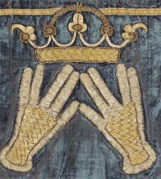

I prefer to use some Hebrew terms in this book rather than constantly using English terms that can’t fully capture the nuances in the Hebrew, partly because the English has unavoidable Christian connotations and partly because the interpreter will hear these Hebrew terms even while the prayer leader or rabbi is speaking in English, so it is wise to get used to them. The first time these Hebrew terms show up in a given chapter, I have tried to remember to have an English translation or short expansion of the term in square brackets ([]), but I may have sometimes missed doing this, or as you read along further in a chapter you may have forgotten what the term means, so you can always check this glossary for help. This is not intended to be every term an interpreter should know. There are a number of on-line glossaries, such as (at the time of this writing) jewfaq.org , jewishvirtuallibrary.org, lamed.org, and shamash.org.
Amidah - The standing silent prayer of any worship service.
Bavli - Activity that led to the Talmud (see separate entry) was concentrated in two different regions: within Israel, which resulted in the Yerushalmi, and outside Israel, which resulted in the Bavli. This won’t come up much, but I explain it here because one of the books I recommend has this word in its title.
Brocha / brachot - Before performing a mitzvah, before eating, and upon certain unusual circumstances (
cheresh / chereshim - The Talmudic term for a person who cannot hear or speak. The term is still in use in modern Hebrew, but a deaf person who can not use her/his voice at all is called a cherish-ilam, so the question is if Talmudic law about a “cheresh” really applies if a person has some speech.
da'at - Full ability to use cognition or consciousness to observe the mitzvoth.
Gemara - An expansion of the Mishnah. It is the Aramaic portion of the Talmud.
Haggadah - The prayer book that outlines the service for the ritual meal on Pesach.
Halacha - Jewish religious law.
Kaddish - A prayer that declares the purity of God’s name. It is often identified with death, since a mourner must recite it with a minyan for eleven months after the death of a parent, spouse, sibling, or child.
kohain / kohanim - A priest who offers sacrifices, which was a hereditary position by virue of being a descendant of Aharon [Aaron], the brother of Moshe Rabainu, who was the first Kohain Gadol [High Priest].
Machzor – A prayer book specifically for Rosh Hashana and Yom Kippur.
Megillah - A kosher parchment scroll of any of the books of the Jewish Bible, except the Torah where it would be called a sefer Torah. Generally this refers to Megillat Ester, a scroll of the Book of Esther, whose reading aloud is required to be heard on Purim.
minyan - In Halacha, a gathering of at least ten male Jews older than thirteen for prayer. This minimum is required to say certain prayers, such as repetition of the Shemoneh Esreh and the recitation of Kaddish.
Mishnah - The first attempt to codify interpretations of Halacha. It is the Hebrew portion of the Talmud.
mitzvah / mitzvoth - The six-hundred thirteen injunctions in the Torah, some positive: for example, love the Lord your God and some negative, for example, don’t worship other gods. They are meant to be acts of love and devotion to God, so the word “commandment” is inadequate in conveyance.
Moshe Rebainu - Moses our teacher.
motzi - When a person can be considered to have fulfilled a mitzvah s/he is said to be yotze. For example, a person who says his/her prayers in English, rather than Hebrew, is yotze, although saying prayers in Hebrew is preferable. When person A enables person B to be yotze in his/her obligation to perform a mitzvah by doing it for B, A is said to be motzi B. For example, a person who eats food should say a brocha, but if A says the brocha and B answers "Amen!", A is motzi B.
Pesach - “Passover”, a spring festival remembering the deliverance of the Jews from Egypt during the time of Moshe Rebainu.
Purim - A celebration of the deliverance of the Jews during the time of King Achashverosh as recorded in the Book of Esther.
Rosh Hashana – Jewish New Year and a time of reflection and repentance.
Shabbat - The "Sabbath" is the weekly celebration of God’s creation of the universe and an imitation of His rest to consider what He had done.
Shavuot - A summer festival celebrating the giving of the Torah and bringing the first-fruits to the Temple.
Shmoneh Esreh - The standing silent prayer of any worship service.
Siddur - Prayerbook for Shabbat and Yom Tov.
Sukkot - A fall festival celebrating the harvest and the temporary structures that the Jews dwelled in while they wandered in the wilderness before first entering Israel.
Talmud - A record of the most canonical interpretations of the Five Books, showing the argumentation that has lead to legal decisions
Tanach - The Jewish Bible. Avoid using the term “Old Testament”.
Torah - In a narrow sense, the Five Books of Moses (Genesis, Exodus, Leviticus, Numbers, and Deuteronomy). It contains the laws by which religious Jews should structure their lives: both positive actions that lead to a better relationship with God and neighbor and prohibitions against acts that would cause such relationships to suffer. In a broader sense, the Torah is the full exegetical expansion of all the wisdom to be found in these Five Books that has developed over the ages.
Yom Kippur – A time of reflection and the “final” opportunity to repent for the previous year and make resolutions for the coming year.
Yom Tov - The three pilgrimage holidays, that is the holidays that required a person to go to Jerusalem and celebrate when the Temple was still in existence, namely Pesach, Shavuot, and Sukkot.
yotze - When a person can be considered to have fulfilled a mitzvah [a commandment] s/he is said to be yotze. For example, a person who says his/her prayers in English, rather than Hebrew, is yotze, although saying prayers in Hebrew is preferable. When person A enables person B to be yotze in his/her obligation to perform a mitzvah by doing it for B, A is said to bemotzi B. For example, a person who eats food should say a brocha [blessing], but if A says the brocha and B answers "Amen!", A is motzi B.